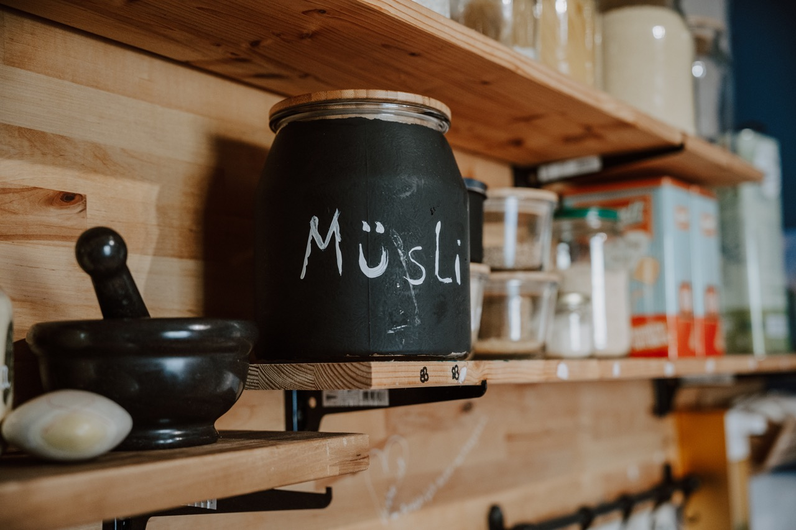

Verpflegung
95 €pro Monat
Für Frühstück, das gemeinsame Mittagessen und den Nachmittags-Snack – frisch zubereitet.
Herzlich willkommen! Wir betreuen neun Kinder zwischen 0 und 3 Jahren in einer von der Stadt Siegen anerkannten Kindertagespflegestelle (§43 SGB VIII) – mit vertrautem Rhythmus, festen Bezugspersonen und viel Zeit zum Ankommen.

Braucht ihr andere Zeiten? Sprecht uns gerne an – wir finden eine Lösung.
Spielzimmer, Schlafzimmer, Küche, kreative Zone, Bad und Garten – vielfältige Orte zum Spielen, Entdecken und Ausruhen.




Ein vertrauter Rhythmus gibt den Kindern Sicherheit und Geborgenheit.
Sanftes Ankommen, in Ruhe verabschieden und freies Spielen.
Gemeinsames Frühstück, Morgenkreis, Freispiel, Gartenzeit und pädagogische Angebote.
Wir bereiten das Mittagessen gemeinsam zu und essen zusammen – danach Mittagsschlaf.
Gemeinsamer Snack, Freispiel und Abholung.
„Kleine Wichtel schlafen immer dann, wenn sie müde sind.“
Eine gute Eingewöhnung verspricht viele schöne und glückliche Tage im Kreis neuer Freunde. Die Dauer gestalten wir individuell und immer in Rücksprache mit euch.
Für Frühstück, das gemeinsame Mittagessen und den Nachmittags-Snack – frisch zubereitet.
Es gilt die pauschalisierte Kostenbeteiligung der Stadt Siegen – vergleichbar mit dem Kindergarten. Die Tabelle findet ihr auf der Website der Stadt Siegen ↗.
Eure Arbeitsstelle ist in Siegen, aber euer Wohnort nicht? Wir arbeiten auch mit den nahe gelegenen Kreisen zusammen. Sprecht uns an – wir prüfen gemeinsam, ob wir euer Kind betreuen können.

Maria Bretthauer, Alexander Tewes und Zerina Muran begleiten die kleinen Wichtel mit Erfahrung und Herz. Lernt die Menschen kennen, die jeden Tag für eure Kinder da sind.
Die Platzanfrage läuft separat über unser Profil beim Wichtelkompass. Klickt euch durch, meldet euch – wir freuen uns auf euch und euer Kind!
Wichtelstübchen (Kindertagespflege) und SandStube (Erlebnisraum für Kinder & Eltern) sind komplett getrennte Angebote. Für ein paar Stunden im Sand geht es bitte zur SandStube-Buchung.